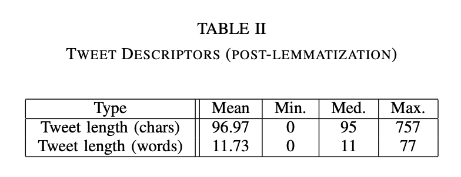
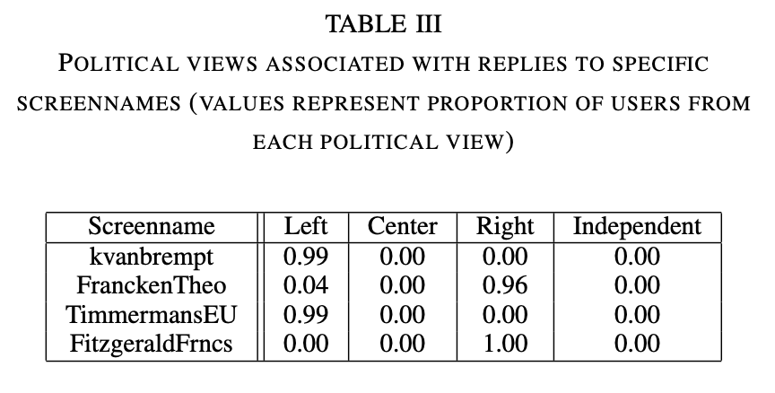
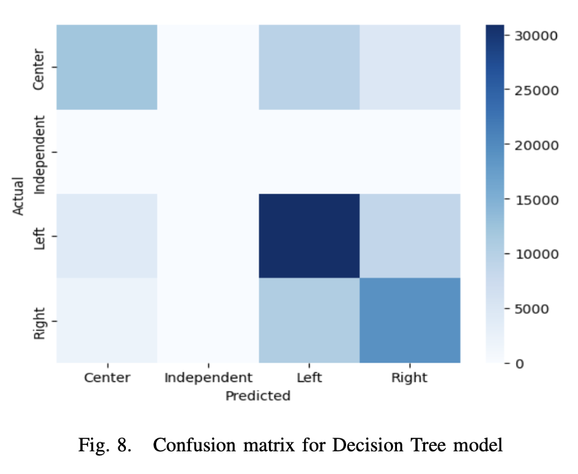

Photo by Souvik Banerjee on Unsplash
Twitter is a widely used social media platform in politics, and also been a hotbed of political controversy campaigning, and advocacy. In this project, I along with my teammate utilized Twitter data to classify Northern European politicians' views into different spectrums. We employed various classification models and language processing techniques including decision trees, catboost, and others, to classify political sentiment from the tweet content, hashtags, and screenames. We were able to achieve an accuracy of 0.71 on an unseen test dataset using a classification model and data from reply and retweet screenname.
The training tweets dataset contains tweet information for a sample of politicians from seven countries in Northern Europe: Belgium, Sweden, Denmark, Norwary, Ireland, Netherlands, and Iceland. Each record contains the full text of a tweet, hashtags included in the tweet, the screen name, the tweet is in the reply to (if applicable), the country of the user, the gender of the user, and the political view of the user. The political views summarized as either Left, Right, Center, or Independent. For simplicity each row will be described as being associated with one user.
There are a total of 509,031 tweets, 407,223 of which are in the training set and 101,808 of which are in the test set.
Here is a snippet of what the training set looks like:

The tweets and hashtags are messy. Firstly, the 'b' byte strings and unicode encoding errors are stripped from the tweets in order to reformat the tweets into a standard readable format. We then proceeded to clean the hashtags and tweets by removing stopwords, links, emojis, punctuations, links, and words that are less than 3 characters long.
Prior to removing stop words, emojis, links, and lemmatization the tweet length (in both words and characters) is summarized in Table I. It is worth noting that the character count does include white space. Twitter limits tweets to 280 characters, which does include spaces, but not full hyperlink text. In addition, the way that emojis are represented is may also have inflated the character counts. The average amount of hashtags is also reported in Table I. The mean hashtag lengths were only calculated for tweets containing hashtags (in other words, missing hashtags were not counted as a length of zero).
After text cleaning and lemmatization, the tweet length measures were recalculated and are summarized in Table II. It is worth noting that majority of the tweets in the data set are not in English. Non-English stop words were removed for some languages, but not all of the languages represented in the dataset. The language also affects lemmatization, which relies on part-of-speech tagging and is supported in English. As anticipated, since text and hyperlinks were removed, the overall character and word counts are both shorter. The elimination of short words, punctuation, and stop words led to some tweets being erased. For example, the tweet "F R E D R I K S T A D..........." is no longer valid after cleaning and lemmatization.
The ten most common hashtags were found for each country:
Figure 1
Prior to counting popular hashtags all tags were made lowercase to avoid the possibility that differences in capitalization would prevent the same text from being counted as the same.
"covid19" was a top hashtag in all of the counties represented in the dataset, except for in Iceland.
In addition, the hashtag "vaccineswork", which is closely associated to the Covid-19 pandemic, was a top hashtag in Norway.
"Ukraine" was also a common hashtag and was a top ten hashtag in Norway, Belgium, Denmark, and Ireland.
There are also several hashtags related to the European Union that are common in the seven countries. These hashtags include: eu, eugreendeal, and migrationeu.

Figure 2
In majority of the countries, the most common political viewpoints were Left or Right, with the exception of the Netherlands (Figure 2). In the Netherlands majority of users had central political views. Iceland was the only country with users that identified as Independent.

Figure 3
Overall, in the entire training dataset there were more male (269,821) than female (137,402) users (Figure 3). The same observation was true for all countries except for Sweden which had more female than male users. Ireland and Belgium had the lowest proportion of female users.
LDA and Non-negative Matrix Factorization are both methods of topic extraction. LDA works by using Bayesian inferencing, and iteratively assigns words to different topic groupings based on the probability of different terms appear- ing in the same documents.
The LDA plot (Figure 4) shows the groupings of some terms. It appears that language is important to the topic groupings, for example topics 6-9 all are English terms, while the remaining topics do not have many (or any) English terms, which makes sense based on how topics are grouped based on words appearing alongside each other.

Figure 4
When applying NMF (Fig. 5) to the data, similarly language was important to topic grouping. NMF works by taking a document-term matrix and factorizing it into a document-topic matrix, which shows distribution of topics across all documents, and term-topic matrix, which shows the distribution of terms for each topic. The term-topic matrix is what is used to generate the plots in Fig. 5. For exaple, in the Frobenius Norm NMF model, words such as today, day, year, good, need, were all grouped together in topic 5, while words such as president, covid19, join, launch, support, ministier, were all grouped together in topic 2.
.png)
.png)
Figure 5
Additional exploratory data analysis was conducted to help inform feature selection and understand patterns in the data. Exploratory data analysis included looking at political spectrum class imbalance, gender by political spectrum, and the importance of certain reply-to and retweet screennames on political spectrum of the user.
From the EDA, while there was a class imbalance of political spectrum, there was not a major imbalance of gender across each political ideology (Figure 6). In the training data set there were very few users that identified as independent (n=703, accounting for approximately 0.1% of the records in the training set).

Figure 6
The EDA revealed that both the user in the reply-to screenname, and the screenname a tweet was retweeted from, are both very strong indicators of political preference of the user. For example, Table III lists several popular screennames that were replied to, and the proportion of users associated with each political view. This phenomenon was true for screennames pertaining to both retweets and reply tweets. Additional examples beyond Table III can be found in the code PDF.
Based off of exploratory data analysis, new features were generated:
The 'retweet_user' and 'in_reply_to_screen_name' vari- ables were used to build dictionaries in which each screename can be looked up to find the political view most strongly associated with it based on the frequency in which a given screenname was associated with users of different political views in the training dataset.
Several models with various hyper-parameters were tested:
Models were initially evaluated using a train-test split of the training data, and stratified k-fold cross validation. Prior to generating predictions on the testing dataset, the model would be fit to the entire training dataset. The metric used to determine model success was overall accuracy score on the train-test split.
A re-labelling function called 'relabel_predictions' was built to relabel the classifications from a given model for data rows corresponding to retweets or replies. The function identifies the predictions made for tweets that are reply- tweets or retweets, then looks up the political view most associated with the screenname that the row was a retweet of or reply to. It will then replace this political view with whatever was predicted for the model.
Overall, our best performing model was a CatBoost classi- fication model that had been relabelled according to retweets and reply screennames. The model achieved 0.71 accuracy on the test data.
During training, the catboost classifier had an accuracy of 0.64 on the evaluation set and 0.634 on the test set before the relabeling procedure (Figure 7).
Another reasonably successful model we had was a decision tree model with a depth of 60 that was also re- labelled. Prior to re-labelling, the model had an accuracy of 0.60 on the model validation set (Figure 8), and 0.59 on the test data. After re-labelling, the model achieved an accuracy of 0.67.

One major limitation of the re-labelling approach with the retweets and reply tweets is that it is not very flexible, nor exhaustive. The re-labelling approach essentially only uses one feature (screenname) to generate a prediction for political spectrum. Not all screennames of reply tweets or retweets in the test set were present in the training set. Additionally, while many screennames were highly associated with one particular political view, this was not true for all. For exam- ple, reply tweets to the screenname 'owenil' were associated with left views 43% of the time, center views 40% of the time, and right views 16% of the time. In this case, it would not be the most appropriate or accurate to make a prediction based off of just this feature.
Additionally, there are other approaches to text processing that could have been implemented. In our models, we did not translate tweets. Our attempts at translation proved to be unsuccessful due to the high volumes of data, however this could have helped improve the accuracy. Handling the large volume of data proved to be a major challenge in this exercise.
We also did not use any dimensionality reduction tech- niques beyond limiting the amount of features in text vec- torization. We explored principle component analysis and T-SNE, however neither generated components that could explain a significant amount of variance in the data, and therefore wouldn't be helpful to incorporate in the model. The sparseness of the dataframe after conducting text vec- torization could be part of the reason for this. Conducting topic or sentiment analysis and incorporating that as a feature could also potentially help strengthen then model.
Future approaches may also consider constructing different models for tweets with different types of available data. For example, while retweet and reply data were helpful indicators of political view, this couldn't be applied to all tweets. Similarly, not all tweets had hashtags, but hashtags could also be important to informing political view. Perhaps different approaches could be used for these different scenarios.
Lastly, there was an evident class imbalance, and beyond stratifying our sampling for model testing and validation, we did not conduct over or under sampling techniques to correct this class imbalance.
Altogether, predicting political view from tweet data was a challenging classification problem to solve, nonetheless ex- ploratory data analysis, testing out multiple different models, and utilizing multiple different text representations helped further the accuracy of our modelling.
https://scikit-learn.org/stable/modules/generated/sklearn.naive_bayes.MultinomialNB.html https://scikit-learn.org/stable/modules/generated/sklearn.ensemble.RandomForestClassifier.html https://scikit-learn.org/stable/modules/generated/sklearn.tree.DecisionTreeClassifier.html https://catboost.ai/en/docs/concepts/python-reference_catboostclassifier